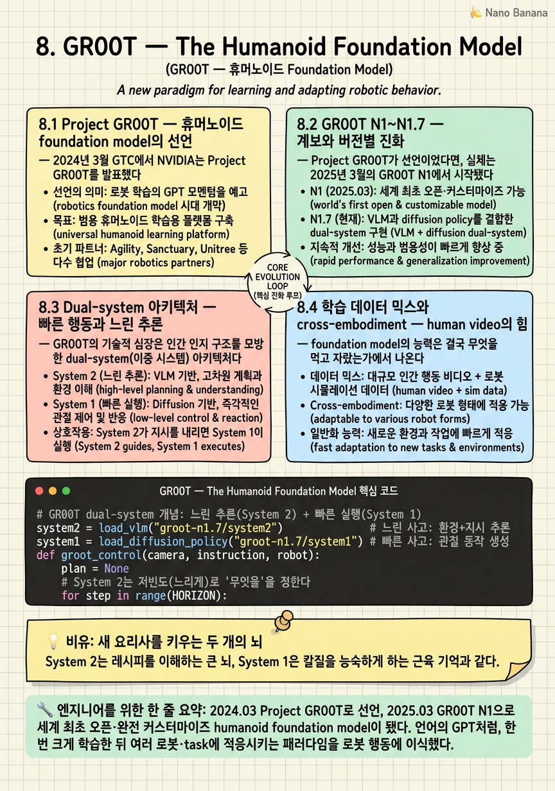

GR00T — The Humanoid Foundation Model

🎯 학습 목표
- GR00T 계보를 버전별 핵심 변화와 함께 설명할 수 있다
- dual-system(System1 action / System2 VLM reasoning)을 이해한다
- 휴머노이드 VLA의 cross-embodiment 학습 데이터 구성을 안다
- human video(EgoScale) 활용이 일반화에 주는 효과를 설명한다
- GR00T와 Cosmos·Isaac Lab의 학습 파이프라인 연결을 그린다
지난 챕터가 'Physical AI의 진짜 병목은 데이터다'를 다뤘다면, 이 챕터는 바로 그 데이터 공장이 먹여 키운 모델을 정면으로 본다 — GR00T. LLM 시대에 GPT가 '언어의 foundation model'이었다면, GR00T는 '휴머노이드 행동의 foundation model'을 노린다. 하나의 모델이 tabletop arm부터 손가락을 정교하게 놀리는 dexterous humanoid까지, 여러 몸체(embodiment)에서 언어 지시를 받아 물리적 행동을 수행하는 것이 목표다.
GR00T의 여정은 2024년 3월 GTC에서 Project GR00T로 선언됐고, 2025년 3월 GR00T N1으로 세계 최초의 오픈·완전 커스터마이즈 가능한 humanoid foundation model이 되었으며, 이후 N1.5→N1.6→N1.7로 빠르게 진화했다. 이 챕터는 그 계보를 단순 연대기가 아니라 '무엇이 왜 개선됐는가'의 서사로 읽는다 — 특히 GR00T-Dreams로 36시간 만에 만든 N1.5, 그리고 20K시간 EgoScale human video를 섞은 N1.7까지.
기술의 심장은 인간 인지를 모방한 dual-system 아키텍처다. 느리게 생각하는 System 2(VLM)가 '무엇을 어떻게 할지' 추론·계획하고, 빠르게 반응하는 System 1(diffusion transformer)이 그 계획을 연속적인 관절 동작으로 번역한다. Kahneman의 '빠른 생각·느린 생각'을 로봇 제어에 이식한 이 구조가, 왜 휴머노이드 VLA(Vision-Language-Action) 모델의 지배적 설계가 되었는지를 파고든다. 그리고 이 모델이 Cosmos(데이터)·Isaac Lab(학습)·Jetson Thor(배치)라는 three computers 스택과 어떻게 맞물리는지로 챕터를 닫는다.
핵심 내용
8.1 Project GR00T — 휴머노이드 foundation model의 선언
2024년 3월 GTC에서 NVIDIA는 Project GR00T를 발표했다. GR00T는 'Generalist Robot 00 Technology'를 뜻하며, 핵심 선언은 하나였다 — 휴머노이드 로봇을 위한 범용 foundation model을 만들겠다는 것.
Project GR00T(프로젝트 그루트) = 2024년 3월 GTC에서 발표된, 휴머노이드 로봇을 위한 범용 foundation model 개발 이니셔티브. 동시에 이를 뒷받침하는 Isaac 로보틱스 플랫폼 업데이트(시뮬·학습·배치 도구군)를 함께 공개했다.
주목할 점은 GR00T가 단순히 '또 하나의 모델'이 아니라 플랫폼과 한 몸으로 발표됐다는 사실이다. 모델(GR00T)과 그것을 만드는 인프라(Isaac Sim·Isaac Lab·Jetson) 업데이트가 동시에 나온 것은, NVIDIA가 이 문제를 '모델 하나'가 아니라 '모델을 계속 찍어내는 시스템'으로 접근한다는 신호였다.
왜 하필 휴머노이드인가? 세상은 인간을 위해 설계됐다 — 문손잡이 높이, 계단 폭, 도구의 손잡이 모두 인간의 몸에 맞춰져 있다. 따라서 인간 형태의 로봇은 별도의 환경 개조 없이 인간의 세계에 곧장 투입될 수 있다. 게다가 인간형이면 방대한 human video(사람이 행동하는 영상)를 학습 데이터로 재활용할 수 있다는 결정적 이점이 있다 — 이 아이디어는 뒤의 EgoScale에서 절정에 이른다.
Project GR00T가 던진 근본 질문은 이것이다: 언어에는 GPT라는 foundation model이 있는데, 왜 '행동'에는 없는가? 그동안 로봇 정책은 대개 특정 로봇·특정 task에 맞춰 처음부터 학습됐다. GR00T의 야심은 이 관행을 뒤집어, 한 번 크게 학습한 뒤 여러 로봇·task에 적응(fine-tune)시키는 foundation model 패러다임을 로봇에 이식하는 것이다. 이후의 N1~N1.7 계보는 모두 이 선언을 현실로 만드는 과정이다.
8.2 GR00T N1~N1.7 — 계보와 버전별 진화
Project GR00T가 선언이었다면, 실체는 2025년 3월의 GR00T N1에서 시작됐다.
GR00T N1(그루트 엔원) = 2025년 3월 발표(arXiv:2503.14734)된, 세계 최초의 오픈·완전 커스터마이즈 가능한 humanoid foundation model. 'open'과 'fully customizable'이 핵심 — 가중치와 구조가 공개돼 누구나 자사 로봇에 맞춰 후학습할 수 있다.
이후의 진화 속도가 이 분야의 열기를 증언한다. 아래 표로 계보를 정리한다.
| 버전 | 시점 | 핵심 변화 |
|---|---|---|
| Project GR00T | 2024.03 | 휴머노이드 foundation model 이니셔티브 선언 + Isaac 플랫폼 업데이트 |
| GR00T N1 | 2025.03 | 세계 최초 오픈·완전 커스터마이즈 humanoid foundation model, dual-system 도입 |
| GR00T N1.5 | 2025.05 | GR00T-Dreams blueprint 합성데이터로 단 36시간 만에 개발 |
| GR00T N1.6 | 2025.12 | bimanual·locomanipulation 개선, diverse embodiment 전반 향상 |
| GR00T N1.7 | 2026.06 | early access + commercial license, advanced dexterous control, 20K시간 EgoScale human video 추가 |
각 버전의 서사를 읽자. N1.5의 하이라이트는 개발 속도다 — 이전 챕터에서 본 GR00T-Dreams blueprint로 합성 데이터를 생성해, N1에서 N1.5로의 개선을 단 36시간 만에 이뤄냈다. 이는 '데이터 공장'이 모델 반복(iteration) 주기를 어떻게 압축하는지 보여주는 상징적 수치다. 데이터가 병목이 아니게 되면, 모델은 주(week)가 아니라 시(hour) 단위로 진화한다.
N1.6은 두 손을 함께 쓰는 bimanual(양손 조작)과 이동하며 조작하는 locomanipulation을 개선했다. 이는 휴머노이드가 '가만히 서서 한 손으로'를 넘어, 실제 사람처럼 걸으며 양손으로 일하는 방향으로 나아감을 뜻한다.
N1.7은 상업화의 문턱을 넘는다 — early access와 commercial license가 붙어 연구실 밖 실제 제품 개발에 쓸 수 있게 됐고, 정교한 손 제어(advanced dexterous control)와 함께 bimanual·semi-humanoid·대규모 humanoid 데이터를 섞어 학습했다. 그리고 이 버전의 결정적 무기가 20K시간의 EgoScale human video다(8.4절에서 상세히 다룬다). 계보 전체를 관통하는 방향은 명확하다 — 더 많은 embodiment, 더 정교한 손, 더 넓은 데이터, 그리고 연구에서 상용으로.
8.3 Dual-system 아키텍처 — 빠른 행동과 느린 추론
GR00T의 기술적 심장은 인간 인지 구조를 모방한 dual-system(이중 시스템) 아키텍처다. 심리학자 Daniel Kahneman의 유명한 이분법 — 빠르고 직관적인 사고(System 1)와 느리고 숙고적인 사고(System 2) — 를 로봇 제어에 이식한 것이다.
System 2(느린 사고) = VLM(Vision-Language Model)이 담당. 카메라로 본 환경과 언어 지시를 함께 이해하고, '무엇을 어떤 순서로 할지'를 추론해 행동 계획(plan)을 세운다. 느리지만 똑똑한, 숙고하는 뇌다.
System 1(빠른 사고) = diffusion transformer가 담당. System 2가 세운 계획을 받아, 그것을 연속적인 관절 동작(continuous joint action)으로 실시간 변환한다. 추론하지 않고 반사적으로 몸을 움직이는, 빠른 운동 피질이다.
왜 둘로 나누는가? 여기에 이 설계의 정수가 있다. 로봇 제어에는 상충하는 두 요구가 있다 — 한편으로는 '이 어질러진 책상에서 빨간 컵을 집어 싱크대에 넣어'라는 지시를 이해하고 계획해야 하고(느려도 되지만 똑똑해야 함), 다른 한편으로는 팔의 관절을 초당 수십 번 부드럽게 제어해야 한다(멍청해도 되지만 빨라야 함). 하나의 신경망으로 둘을 다 하려면 비효율적이다. VLM은 크고 느려서 고빈도 제어에 부적합하고, 저수준 제어기는 언어 추론을 못 한다.
dual-system은 이 긴장을 분업으로 푼다. System 2(VLM)는 낮은 빈도로 '무엇을'을 정하고, System 1(diffusion transformer)은 높은 빈도로 '어떻게'를 실행한다. diffusion transformer가 쓰이는 이유도 명확하다 — 로봇의 관절 동작은 부드럽고 연속적인 궤적인데, diffusion 모델은 노이즈에서 점진적으로 매끄러운 신호를 복원하는 데 강해 연속 동작 생성에 잘 맞는다.
이 구조를 VLA(Vision-Language-Action) 모델의 관점에서 보면, System 2가 Vision-Language를, System 1이 Action을 맡는 자연스러운 분해다. GR00T가 휴머노이드 VLA의 지배적 설계로 자리 잡은 이유는, 이 dual-system이 '똑똑함'과 '빠름'을 하나의 모델 안에서 타협 없이 동시에 얻는 우아한 방법이기 때문이다. 이후 등장한 여러 로봇 정책 모델이 이 빠른/느린 이분법을 계승한다.
8.4 학습 데이터 믹스와 cross-embodiment — human video의 힘
foundation model의 능력은 결국 무엇을 먹고 자랐는가에서 나온다. GR00T의 학습 데이터는 세 갈래의 혼합(data mix)이다.
- 실로봇 궤적(real robot trajectory): 실제 로봇을 teleop해 모은, 가장 값비싸지만 가장 정확한 ground-truth 행동 데이터
- human video(인간 행동 영상): 사람이 물건을 다루고 일하는 영상 — 인간형 로봇이기에 재활용 가능한 방대한 자원
- 합성 데이터(synthetic): GR00T-Dreams/Mimic과 Cosmos 파이프라인이 생성한, 값싸게 대량 확보 가능한 데이터
이 세 갈래를 섞는 이유는 각자의 약점을 서로가 메우기 때문이다. 실로봇 데이터는 정확하지만 적고, human video는 방대하지만 로봇 행동과 직접 대응하지 않으며, 합성은 대량이지만 domain gap이 있다. 셋을 결합하면 '정확·방대·대량'을 동시에 근사할 수 있다.
GR00T의 또 다른 핵심 성질은 cross-embodiment(교차 몸체)다. 하나의 GR00T 모델이 tabletop arm(탁상 위 고정 팔)부터 dexterous humanoid(손가락을 정교하게 놀리는 인간형)까지 서로 다른 몸체를 아우른다. 이것이 가능한 이유는, foundation model이 특정 로봇의 관절 구조에 종속된 지식이 아니라 '물체를 어떻게 다루는가'라는 더 추상적인 조작 지식을 학습하기 때문이다. 실제로 GR00T는 Fourier의 GR-1 휴머노이드에 배치되어, language-conditioned bimanual manipulation(언어 지시에 따라 양손으로 조작)을 수행했다 — '컵을 집어'라는 말을 듣고 두 손으로 실제 물체를 다루는 것.
데이터 믹스의 정점이 N1.7의 EgoScale이다.
EgoScale human video = GR00T N1.7(2026.06)에 추가된 20,000시간 규모의 1인칭(egocentric) 인간 행동 영상 데이터. 사람 시점에서 촬영한 방대한 손동작·조작 영상을 학습에 섞었다.
EgoScale이 왜 중요한가? human video의 위력은 '인간형이라 사람 영상을 그대로 배울 수 있다'는 Project GR00T의 원래 통찰을 20K시간 규모로 실현했다는 데 있다. 실로봇 데이터는 모으는 데 로봇·사람·시간이 들어 태생적으로 희소하지만, 사람이 일하는 1인칭 영상은 상대적으로 훨씬 풍부하다. 이 방대한 human video를 섞자 N1.7의 일반화(generalization)와 language-following(언어 지시 따르기)이 향상됐다 — 본 적 없는 물체·상황에도 더 잘 대응하고, 지시를 더 정확히 이해하게 된 것이다. 이는 로봇 데이터 병목을 '인간 데이터'로 우회하는 전략이 실제로 작동함을 보여주는 증거다.
8.5 GR00T와 three computers — Cosmos·Isaac Lab·Jetson Thor의 결합
GR00T는 홀로 존재하지 않는다. 이 코스의 전역 프레임인 three computers(DGX=학습 / Omniverse=시뮬 / Jetson=배치)와 스택(Omniverse→Isaac Sim/Cosmos→Isaac Lab→policy→Jetson) 위에서, GR00T는 정확히 'policy' 자리를 차지하는 산출물이다.
GR00T의 생애주기를 스택으로 따라가보자.
-
데이터 — Cosmos: GR00T가 먹을 합성 데이터는 GR00T-Dreams/Mimic과 Cosmos WFM 파이프라인이 생성한다(Chapter 5·7). neural trajectory와 domain randomization으로 데이터 병목을 우회한 그 산출물이 GR00T의 밥이다.
-
학습 — Isaac Lab: 모은 데이터로 GR00T 정책을 실제로 학습·후학습(post-train)하는 곳이 Isaac Lab이다(Chapter 4). foundation model을 특정 embodiment·task에 맞춰 fine-tune하는 무대다.
-
배치 — Jetson Thor: 학습된 GR00T를 실제 로봇의 뇌에 올리는 것이 Jetson Thor다. 휴머노이드의 몸 안에서 실시간으로 dual-system 추론을 돌리는 on-robot 컴퓨터다(Chapter 12에서 상세).
이 결합이 왜 중요한가? GR00T가 'open·customizable foundation model'로서 가치를 가지려면, 그것을 자사 로봇에 맞춰 데이터를 만들고(Cosmos), 학습시키고(Isaac Lab), 올릴(Jetson) 전 과정이 하나의 일관된 도구 사슬로 이어져야 한다. NVIDIA의 전략적 우아함이 여기 있다 — GR00T라는 모델 자체보다, 그 모델을 각 기업이 자기 것으로 만드는 전체 파이프라인을 소유한다는 점이다.
dual-system 관점에서도 스택이 맞물린다. System 2(VLM)의 세계 이해는 Cosmos Reason 같은 물리 추론 자산과 계보를 공유하고, System 1(diffusion transformer)의 연속 제어는 Isaac Lab의 물리 시뮬에서 다듬어진다. 즉 GR00T의 두 뇌는 각각 '데이터·추론'과 '시뮬·제어'라는 스택의 서로 다른 층에서 길러진다.
정리하면, GR00T는 앞선 일곱 챕터에서 하나씩 쌓아 올린 도구들 — OpenUSD·Omniverse·Isaac Sim·Isaac Lab·Cosmos·합성데이터 — 이 수렴하는 하나의 결정체다. 그리고 다음 챕터는 GR00T 같은 거대 모델 옆에서, NVIDIA Research가 mobility·whole-body·memory라는 구체적 능력을 어떻게 워크플로우로 조립하는지(R²D²)를 본다.
💡 비유로 이해하기
GR00T를 이해하려면, 갓 채용한 만능 요리사 한 명을 떠올리면 된다. 이 요리사에게는 서로 다른 속도로 도는 두 개의 뇌가 있다. 하나는 느리지만 사려 깊은 총괄 셰프의 뇌(System 2, VLM)다 — 주문서('빨간 컵을 집어 싱크대에 넣어')와 지금 주방 상태를 눈으로 훑고, '먼저 컵을 잡고, 돌아서서, 싱크대에 놓는다'는 순서를 머릿속으로 짠다. 다른 하나는 빠르지만 생각 없는 손의 뇌(System 1, diffusion transformer)다 — 총괄 셰프의 계획을 받아, 팔 관절을 초당 수십 번 부드럽게 움직여 실제로 컵을 잡는다. 총괄 셰프가 매 순간 손가락 하나하나를 지시했다면 요리는 굼떴을 것이고, 손이 스스로 주문을 해석하려 했다면 엉뚱한 걸 집었을 것이다. 둘의 분업이 '똑똑하면서 빠른' 요리사를 만든다.
그런데 이 요리사를 어떻게 훈련시켰나? 세 종류의 교재를 섞어 먹였다. 진짜 주방에서 손을 잡고 가르친 값비싼 실습(실로봇 궤적)은 정확하지만 몇 시간 안 된다. 유튜브에 널린 사람들의 요리 영상(human video, EgoScale 20K시간)은 어마어마하게 많고, 이 요리사가 사람 모양이라 그 손동작을 그대로 흉내 낼 수 있다. 그리고 상상으로 찍어낸 무한한 연습 영상(합성 데이터, GR00T-Dreams)이 나머지를 채운다.
놀라운 건 이 요리사가 한 주방에만 매인 게 없다는 점이다 — 탁상 위 로봇 팔로도, 두 발로 걷는 휴머노이드로도 같은 요리 지식을 발휘한다(cross-embodiment). 몸이 바뀌어도 '요리를 어떻게 하는가'라는 추상적 감각은 유지되기 때문이다. 심지어 이 요리사를 더 똑똑하게 만드는 데 예전엔 몇 주가 걸렸지만(N1→N1.5), 상상 교재를 자동으로 찍어내자 단 36시간이면 충분해졌다. 총괄 셰프의 뇌, 손의 뇌, 그리고 세 겹의 교재 — 이것이 GR00T라는 만능 요리사의 정체다.
💻 코드 예시
GR00T의 dual-system 추론 흐름을 개념 코드로 표현한다. 실제 API가 아니며, 요점은 'System 2(VLM)가 느리게 plan을 세우고 → System 1(diffusion transformer)이 빠르게 그 plan을 연속 action chunk로 변환한다'는 이중 루프 구조다.
# GR00T dual-system 개념: 느린 추론(System 2) + 빠른 실행(System 1)
system2 = load_vlm("groot-n1.7/system2") # 느린 사고: 환경+지시 추론
system1 = load_diffusion_policy("groot-n1.7/system1") # 빠른 사고: 관절 동작 생성
def groot_control(camera, instruction, robot):
plan = None
# System 2는 저빈도(느리게)로 '무엇을'을 정한다
for step in range(HORIZON):
if step % PLAN_EVERY == 0: # 예: 매 수십 스텝마다 재계획
obs = camera.read()
plan = system2.reason(image=obs, # VLM: 보고 + 지시 이해
instruction=instruction)
# plan 예: ["reach red cup", "grasp", "move to sink", "release"]
# System 1은 고빈도(빠르게)로 '어떻게'를 실행한다
state = robot.proprioception() # 현재 관절 상태
action_chunk = system1.denoise(plan=plan, # diffusion: 연속 동작 복원
state=state,
embodiment=robot.kind) # cross-embodiment
robot.execute(action_chunk) # 부드러운 관절 궤적 실행
# 같은 정책을 서로 다른 몸체에 배치 (cross-embodiment)
groot_control(cam, "put the red cup in the sink", robot=TabletopArm())
groot_control(cam, "put the red cup in the sink", robot=FourierGR1()) # 휴머노이드핵심은 '두 시스템이 다른 빈도로 돈다'는 점이다. (1) system2.reason은 VLM으로, 카메라 이미지와 언어 지시를 함께 이해해 고수준 plan을 세운다 — 느리지만 똑똑하므로 매 스텝이 아니라 PLAN_EVERY 주기로만 호출한다. (2) system1.denoise는 diffusion transformer로, 그 plan과 현재 관절 상태(proprioception)를 받아 연속적인 action_chunk를 복원한다 — noise에서 매끄러운 궤적을 뽑는 diffusion의 강점이 연속 동작 생성에 맞는다. (3) 이 System 1이 고빈도로 돌며 로봇을 실시간 제어한다. 맨 아래를 보라 — 동일한 groot_control이 TabletopArm과 FourierGR1(휴머노이드)에 똑같이 적용된다. embodiment 인자만 바뀔 뿐 조작 지식은 공유되는 것이 cross-embodiment의 코드적 표현이다. '느린 계획 + 빠른 실행'의 분업이 GR00T가 똑똑함과 실시간성을 동시에 얻는 방식이다.
🏭 현업에서의 평가
✅ 시니어가 보는 것
- GR00T를 'humanoid 행동의 foundation model'로 정의하고, 한 번 크게 학습 후 여러 embodiment·task에 적응시키는 패러다임을 언어 모델(GPT)과 대비해 설명하는가
- dual-system을 정확히 분해하는가 — System 2(VLM, 느린 추론·계획)와 System 1(diffusion transformer, 빠른 연속 동작)이 왜 다른 빈도로 분업하며, diffusion이 연속 제어에 적합한 이유는 무엇인가
- cross-embodiment의 원리 — 특정 관절 구조가 아니라 추상적 조작 지식을 학습하기에 tabletop arm~dexterous humanoid를 한 모델로 아우름 — 를 이해하는가
- 학습 데이터 믹스(실로봇 궤적·human video·합성)의 상보성과, EgoScale 20K시간 human video가 일반화·language-following을 높이는 이유를 설명하는가
- GR00T가 three computers 스택에서 Cosmos(데이터)·Isaac Lab(학습)·Jetson Thor(배치)와 맞물리는 policy 자리임을 그리는가
⚠️ 레드 플래그
- GR00T를 그냥 '로봇 LLM'이나 특정 task 모델로 뭉뚱그리고, foundation model로서 여러 embodiment에 적응한다는 핵심을 놓치는 경우
- dual-system을 단순히 '두 개 모델'로만 말하고, 왜 나누는가(똑똑함 vs 빠름의 상충, 빈도 분업)를 설명하지 못하는 경우
- System 1의 diffusion transformer가 왜 연속 관절 동작에 적합한지, System 2의 VLM이 왜 저빈도인지 혼동하는 경우
- human video/EgoScale을 단순 '데이터 추가'로만 보고, 인간형이라 사람 영상을 재활용해 데이터 병목을 우회한다는 전략적 의미를 놓치는 경우
- GR00T를 스택에서 고립된 모델로 보고 Cosmos·Isaac Lab·Jetson과의 파이프라인 연결을 그리지 못하는 경우
🎤 예상 인터뷰 질문
- Q1 (개념): GR00T를 humanoid foundation model이라 부를 때 'foundation model'이라는 표현이 뜻하는 바를 언어 모델과 대비해 설명하라. cross-embodiment가 어떻게 가능한가?
- Q2 (아키텍처): dual-system 아키텍처에서 System 1과 System 2의 역할·구성·동작 빈도를 설명하라. 왜 하나의 신경망으로 통합하지 않고 둘로 나누는가? System 1에 diffusion transformer를 쓰는 이유는?
- Q3 (데이터·전략): GR00T의 학습 데이터는 실로봇 궤적·human video·합성의 믹스다. 각각의 장단점과 상보성을 설명하고, N1.7의 EgoScale 20K시간 human video가 왜 일반화와 language-following을 높이는지 논하라.
✨ 핵심 요약
GR00T는 휴머노이드 행동의 foundation model이다
2024.03 Project GR00T로 선언, 2025.03 GR00T N1으로 세계 최초 오픈·완전 커스터마이즈 humanoid foundation model이 됐다. 언어의 GPT처럼, 한 번 크게 학습한 뒤 여러 로봇·task에 적응시키는 패러다임을 로봇 행동에 이식했다.
N1→N1.5→N1.6→N1.7 — 빠른 계보
N1.5(2025.05)는 GR00T-Dreams 합성데이터로 단 36시간에 개발, N1.6(2025.12)은 bimanual·locomanipulation 개선, N1.7(2026.06)은 commercial license·advanced dexterous control·20K시간 EgoScale 추가. 데이터 공장이 모델 반복 주기를 시(hour) 단위로 압축했다.
Dual-system — 빠른 행동과 느린 추론의 분업
인간 인지를 모방해, System 2(VLM)가 느리게 환경·지시를 추론해 계획하고, System 1(diffusion transformer)이 빠르게 그 계획을 연속 관절 동작으로 변환한다. 똑똑함(느림)과 실시간성(빠름)의 상충을 빈도 분업으로 동시에 얻는다.
System 1에 diffusion transformer를 쓰는 이유
로봇의 관절 동작은 부드럽고 연속적인 궤적인데, diffusion 모델은 noise에서 매끄러운 신호를 점진적으로 복원하는 데 강해 연속 동작 생성에 잘 맞는다. VLM(System 2)은 크고 느려 고빈도 제어에 부적합하므로 둘을 분리한다.
Cross-embodiment — 하나의 모델, 여러 몸체
tabletop arm부터 dexterous humanoid까지 서로 다른 embodiment를 한 GR00T가 아우른다. 특정 관절 구조가 아니라 '물체를 어떻게 다루는가'라는 추상적 조작 지식을 학습하기 때문이다. 실제로 Fourier GR-1에 배치돼 language-conditioned bimanual manipulation을 수행했다.
세 겹의 학습 데이터 믹스
실로봇 궤적(정확·희소)·human video(방대·간접)·합성 데이터(대량·domain gap)를 섞어, 각자의 약점을 서로 메운다. 셋의 결합으로 '정확·방대·대량'을 동시에 근사하는 것이 foundation model 능력의 원천이다.
EgoScale — human video로 데이터 병목을 우회
N1.7에 추가된 20K시간의 1인칭 인간 행동 영상. 인간형 로봇이라 사람 손동작 영상을 그대로 배울 수 있다는 Project GR00T의 통찰을 대규모로 실현해, 일반화와 language-following을 끌어올렸다. 로봇 데이터 희소성을 인간 데이터로 우회하는 전략이다.
GR00T는 three computers 스택의 수렴점
데이터는 Cosmos(GR00T-Dreams/Mimic), 학습은 Isaac Lab, 배치는 Jetson Thor가 맡는다. NVIDIA의 힘은 GR00T 모델 자체보다, 각 기업이 자사 로봇에 맞춰 데이터 생성·학습·배치하는 전체 파이프라인을 소유한다는 데 있다.